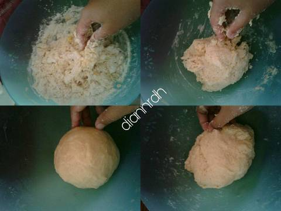

Resep Kue Maryam
Bahan-bahan :
- 250grm tepung terigu
- 1 butir telur
- 3 sdm margarin, lelehkan
- 100 ml susu cair
- 5 sdm minyak goreng
- 1/2 sdt garam
- Air secukupnya
Langkah-langkah :
- Campur semua bahan roti jadi satu

- Uleni sampai kalis (pake tangan) jangan takut jika adonan lengket ya,
lumuri tangan sesekali dg tepung (tapi jangan menambahkan tepung) uleni
terus sampai adonan kalis.

- Kalisnya adonan canai tidak sekalis adonan roti ya, kira2 seperti ini sudah cukup